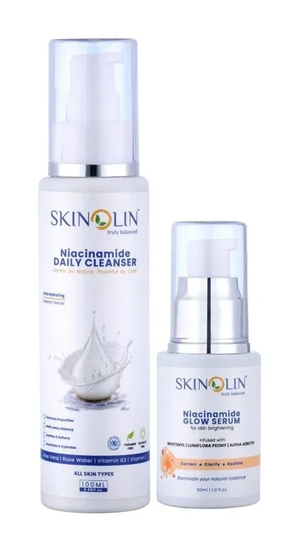
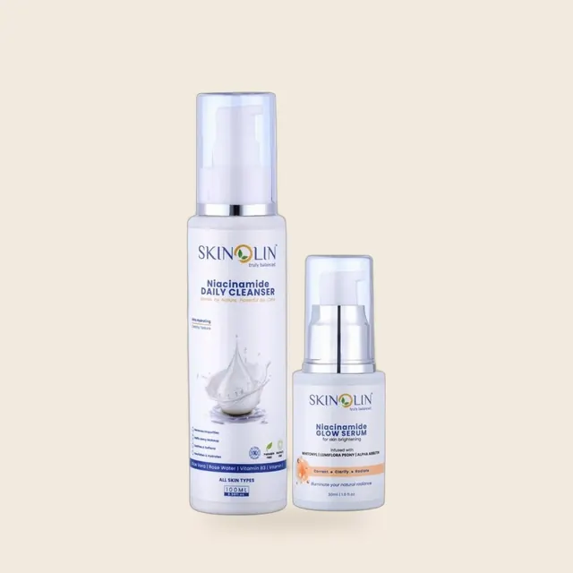

How to Use Niacinamide Serum: Morning or Night, and What to Pair It With

Niacinamide serum is one of the easiest actives to use. After cleansing, apply two to three drops to your face and neck, pat it in, follow with a moisturizer, and add sunscreen in the morning. You can use it in the morning, at night or both, and it works with most of the other products in your routine.
The details below cover the order, the amount, the timing, and the few ingredients worth spacing apart.
If you are still deciding whether niacinamide is right for you, start with our guide to niacinamide benefits. This article is about using it well once you have a bottle.
How to use niacinamide serum, step by step
- Cleanse your face. Wash with a gentle cleanser and pat your skin dry, or leave it very slightly damp. The Niacinamide Daily Cleanser is made for this step.
- Tone if you use a toner. A hydrating toner or mist on damp skin makes the serum spread more easily. The Hydrating Toner Mist works as this step.
- Apply 2 to 3 drops. Place the drops on your fingertips or directly on your cheeks, forehead and chin, then spread over your face and neck. Pat and press the serum in until it is absorbed. Rubbing drags the skin and wastes product.
- Wait about a minute. This lets the serum settle before the next layer, so it does not mix into your moisturizer and pill.
- Apply moisturizer. This helps seal the serum in and keeps skin comfortable.
- In the morning, finish with sunscreen. This step is not optional if you are using niacinamide for dark spots or uneven tone, because sun exposure keeps producing new pigment. See our guide on how to choose and use sunscreen.
Keep the serum off your eyelids and out of your eyes, as you would with any serum.

When to use niacinamide serum: morning, night or both?
Niacinamide is gentle enough for both, and it does not make skin sensitive to the sun, so the timing is mostly about habit and what else is in your routine.
| Time | Why it works | Choose it if |
|---|---|---|
| Morning | Layers neatly under moisturizer and sunscreen. Supports the skin barrier through the day. | Oil, shine or uneven tone is your main concern, or you only want to do one application. |
| Night | Skin repairs overnight, and there is no sunscreen to layer, so the routine is simpler. | Your skin is dry or sensitive, or you want a short morning routine. |
| Both | Gives the most consistent exposure, which is how many studies use it. | Your skin is comfortable with it and you want the fullest routine. The Skinolin Niacinamide Glow Serum is designed for use twice daily. |
If you are not sure, start with one application a day for a week, then add the second once your skin is settled. The best time is the one you will remember to do every day.
Where niacinamide serum goes in your routine
Apply products from thinnest to thickest. For most people that gives this order:
- Cleanser
- Toner or mist
- Niacinamide serum
- Any other serum (a hydrating serum, for example)
- Moisturizer
- Sunscreen (morning only)
For the full order, including actives and exfoliants, see our daily skin care routine for glowing skin.
Products in this guide


What to pair niacinamide with
Niacinamide is one of the most flexible ingredients in skincare. This table shows how it fits with the others.
| Ingredient | Pair with niacinamide? | How |
|---|---|---|
| Sunscreen | Always | Last step in the morning. It protects the progress niacinamide makes on dark spots. |
| Hyaluronic acid and hydrating serums | Yes | Layer thinnest first. Both are gentle and work well together on damp skin. |
| Moisturizer, ceramides and panthenol | Yes | Apply the moisturizer after the serum to seal everything in. |
| Vitamin C | Usually yes | Most people can use both in the same routine. If your skin tingles or flushes, put one in the morning and the other at night. |
| Retinol and retinoids | Yes, with care | Niacinamide can make a retinoid routine more comfortable. If your skin is sensitive, use the retinoid on alternate nights. |
| Exfoliating acids (glycolic, lactic, salicylic) | Yes, with care | If your skin is sensitive or just starting out, use them on different nights from your serum. |
| Kojic acid and alpha arbutin | Yes | Both help with dark spots in a different way. Introduce them one at a time so you know how your skin responds. |
One principle covers all of it: add one new active at a time, wait a couple of weeks, and only then add another. If something irritates your skin, it is much easier to identify the cause. If your skin is already irritated, take actives out rather than adding more; our skin barrier repair guide explains how.
How much and how often
- Amount: 2 to 3 drops for the face and neck is enough. More does not work faster, and too much can leave a tacky layer that pills under moisturizer or sunscreen.
- Frequency: daily once your skin is comfortable with it. If your skin is sensitive, begin every other day for the first week.
- Duration: give it at least 8 weeks before judging results. Studies on dark spots and tone use 8 to 12 weeks.
Niacinamide serum uses by skin type
Niacinamide serum is used for the same few goals, and the best formula depends on what else your skin needs.
| Your concern | What to use the serum for | Skinolin option |
|---|---|---|
| Dullness, dark spots, uneven tone | Evening out tone over time, with daily sunscreen | Niacinamide Glow Serum |
| Dry, tight, dehydrated skin | Barrier support plus hydration | Aquaglow Hydrating Serum |
| Sensitive, easily irritated skin | Calming and barrier support | Chamomile Face Serum |
| Early lines and loss of firmness | Texture and a smoother look over time | B3 Lemongrass Anti-Aging Serum |
| Barrier repair and acne marks | Calming and tone | CICA Exosomes Face Serum |

A simple niacinamide routine
Morning: Niacinamide Daily Cleanser, Hydrating Toner Mist, Niacinamide Glow Serum, a moisturizer, then Anhydrous Sunscreen SPF 50 PA++++. On days you are mostly indoors, the All-in-1 Moisturiser with SPF 30 can combine the last two steps.
Night: Niacinamide Daily Cleanser, Hydrating Toner Mist, Niacinamide Glow Serum, then moisturizer.
The Niacinamide Brightening Duo gives you the cleanser and the serum together at a lower price than buying them separately.
Common mistakes
- Using too much. A few drops is enough. A thick layer pills and wastes the serum.
- Skipping sunscreen. Without it, dark spots keep forming faster than niacinamide fades them.
- Expecting overnight results. Niacinamide is a slow, steady ingredient.
- Starting several actives at once. If skin reacts, you cannot tell which product caused it.
- Switching serums every few weeks. You never reach the 8 to 12 week mark where results show.
What if my skin tingles, flushes or breaks out?
Mild tingling or flushing in the first few days can happen, especially if you have sensitive skin or a damaged barrier. Use less, apply it less often, or put a moisturizer on first. If you break out after starting a new serum, stop it for a week or two and check whether another new product is the cause. Niacinamide is not an exfoliant, so it is less likely to cause the kind of breakouts that exfoliating ingredients can. If a reaction persists, or you get a rash or swelling, stop using it and see a doctor.
Frequently asked questions
When should I use niacinamide serum, morning or night?
Either, or both. Niacinamide is gentle and does not make skin sensitive to the sun, so use it at whichever time you will do it consistently. The Skinolin Niacinamide Glow Serum is designed for use twice daily. If you use it in the morning, finish with sunscreen.
How many drops of niacinamide serum should I use?
Two to three drops are enough for the face and neck. Using more does not speed up results and can leave a sticky layer that pills under your moisturizer.
Do I apply niacinamide serum before or after moisturizer?
Before. Serums are thinner than moisturizers, so they go on first. Apply the serum to clean skin, wait about a minute, and then apply your moisturizer to seal it in.
Can I use niacinamide serum every day?
Yes. Niacinamide is gentle enough for daily use. If your skin is sensitive, begin every other day for the first week and increase as your skin gets used to it.
Can I use niacinamide serum with vitamin C, retinol or acids?
Usually yes. Most people can use niacinamide with vitamin C, and it often makes a retinoid routine more comfortable. If your skin is sensitive, space them out, for example vitamin C in the morning and niacinamide at night, and introduce one new active at a time.
Do I need sunscreen when using niacinamide serum?
Yes, especially if you are using it for dark spots or uneven tone. Sun exposure creates new pigment, so without daily sunscreen it will keep undoing the work the serum does.
Can I apply niacinamide serum on damp skin?
Yes. Applying it to slightly damp skin can help it spread easily, particularly with a mist or toner first. Avoid soaking-wet skin, which dilutes the serum and makes it harder to absorb evenly.
Why does my niacinamide serum pill or feel sticky?
Usually it is too much product or too little time before the next layer. Use two to three drops, press them in, and wait about a minute before the moisturizer.
How long does niacinamide serum take to work?
Most people see hydration and comfort improve within a few weeks, and changes in oil, pores and dark spots over 8 to 12 weeks of consistent daily use. Do not judge it before eight weeks.
The short version
Cleanse, tone if you like, apply two to three drops of niacinamide serum, wait a minute, moisturize, and use sunscreen in the morning. Use it once or twice a day, add other actives one at a time, and give it at least eight weeks. It is a gentle ingredient that works best with consistent use.
Sources and further reading
Further reading from dermatology organizations and published research:
- Wohlrab J et al. Niacinamide - mechanisms of action and its topical use in dermatology. Skin Pharmacol Physiol, 2014 (PubMed)
- Bissett DL et al. Niacinamide: A B vitamin that improves aging facial skin appearance. Dermatol Surg, 2005 (PubMed)
- American Academy of Dermatology: How to maximize results from anti-aging skin care products
Shop this routine
